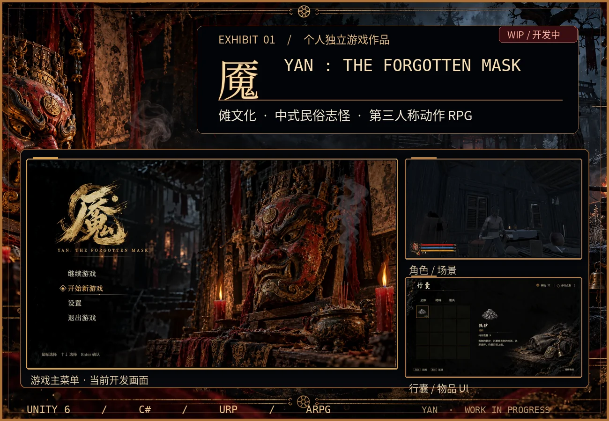
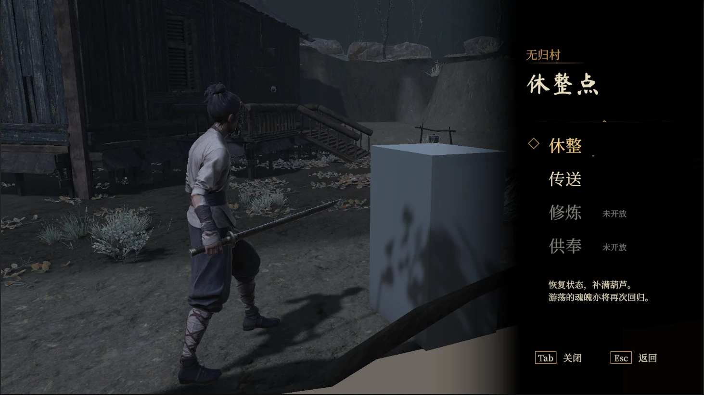
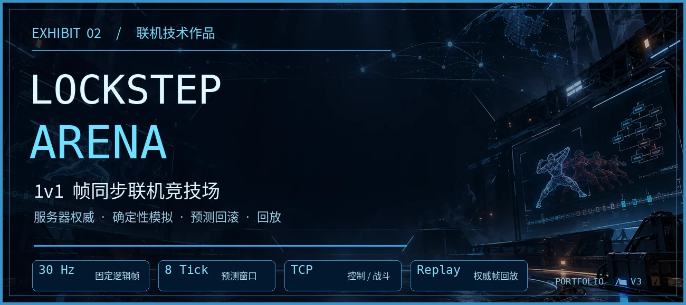
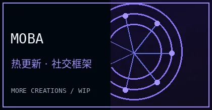
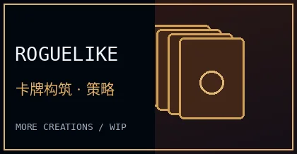
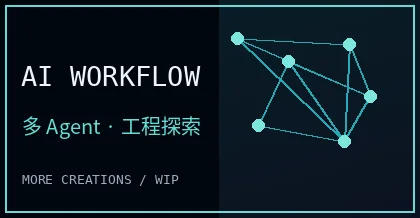

本地结构预览：顶部正式版使用动态打字 SVG；Lockstep 图片在 GitHub 上直接加载正式作品集的真实截图。
Hi, I'm White▍
Unity 游戏开发者 · Gameplay Programmer · Multiplayer Systems你好，我是 White。喜欢游戏，也喜欢把自己的想法变成能真正运行的作品。
这里是我的游戏与技术陈列室：记录独立游戏创作、客户端开发和联机技术实践。
🎮 Featured Works · 我的作品陈列室
每个项目都有属于自己的世界。点进对应的作品仓库，可以了解更完整的技术实现。
01 · 《魇》 YAN: The Forgotten Mask

中式民俗志怪题材 · 第三人称动作 RPG
《魇》是我正在制作的独立游戏与毕业设计，灵感来自中国傩文化、传统民俗及志怪想象。当前主要推进无归村关卡、角色与场景表现、交互界面以及动作玩法原型。
展柜背景为氛围设计图；其中的主菜单、角色场景与行囊画面来自实际 Unity 开发截图，经过裁切处理。目前项目仍在持续制作中。
📷 再看一张《魇》的开发中画面：无归村休整点

包含尚未替换的占位模型。
《魇》目前尚未公开完整源码。后续会在这里补充独立项目展示页、实机演示与开发记录。
02 · Lockstep Arena

1v1 帧同步局域网竞技场
一个可游玩的多人联机技术项目。它将战斗规则从 Unity 表现层独立出来，由服务器发布完整权威输入帧；客户端支持有界预测、Dirty Frame 检测和状态回滚，并通过 StateDigest 与权威帧回放验证对局一致性。
LIVE BATTLE
正式 Windows 版实机截图
发布后从 LockstepArena_Portfolio 自动加载
正式 Windows 版实机截图
发布后从 LockstepArena_Portfolio 自动加载
F1 / DIAGNOSTICS
状态诊断
状态诊断
REPLAY / AUTHORITY
权威帧回放
权威帧回放
正式 README 中直接引用真实 battle / diagnostics / replay 截图，科技展签为装饰性设计。
🔗 查看 LockstepArena_Portfolio：源码、架构说明与运行指南 →
🗂️ More Creations · 更多创作

Unity / xLua · 资料整理中

数据驱动 · 资料整理中

Agent · 持续研究中
这些项目的公开资料还在陆续整理；等仓库或演示页面准备好后，会补上可访问的链接。
🛠️ Tech Stack · 技术与工具
Unity · C# · Lua / xLua · TCP / Protobuf · UGUI · Git · C++ / LeetCode
Make games. Learn systems. Keep creating.